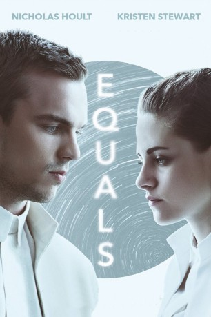
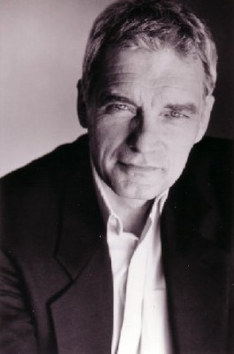
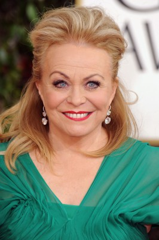
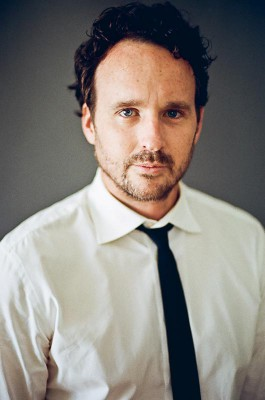

#4690 Equals - Euch gehört die Zukunft
Alternativ: Equals
 
 IMDB-Wertung: 6.1 / 10
IMDB-Wertung: 6.1 / 10  Metascore: 0
Metascore: 0 
Wissenschaftler haben herausgefunden, dass das Böse in der Welt eigentlich immer auf menschlichen Gefühlen basiert. Nach dem totalen Atomkrieg wurde darum beschlossen, Emotionen vollständig abzuschalten, um weitere Katastrophen zu verhindern. So gehen auch Silas (Nicholas Hoult) und Nia (Kristen Stewart) wie betäubt durch das Leben. Traurigkeit und Angst kennen sie nicht. Doch auch die Liebe und die Freude sind ihnen völlig fremd. Eines Tages beginnt eine Seuche um sich zu greifen. Auch Silas und Nia werden befallen – und müssen entdecken, dass sie sich näher sind, als sie jemals gedacht haben. Die beiden sind ineinander verliebt und werden dafür von der Gesellschaft geächtet – schließlich sind sie von einer schweren Krankheit befallen. Sie müssen sich zwischen emotionaler Leere und Liebe entscheiden.
Jahr: 2015
Dauer: 101 Minuten
FSK: 12
Land: USA Studio: A24Tonspuren: DTS - ,
Untertitel: Deutsch,
Auflösung: 1080p (1920x1040) Größe: 4966 MB
Genre: Drama, Liebe, Sci-Fi
Regisseur: Drake Doremus
Drehbuch: Daniel Giat
Soundtrack:
Darsteller:
 Nicholas Hoult als Silas
Nicholas Hoult als Silas- Vernetta Lopez als Woman at Turnstile
 Scott Lawrence als Mark
Scott Lawrence als Mark- Kate Lyn Sheil als Kate
 Kristen Stewart als Nia
Kristen Stewart als Nia- Rebecca Hazlewood als Zoe
 Bel Powley als Rachel
Bel Powley als Rachel-  David Selby als Leonard
- Aurora Perrineau als Iris
- Jessica Lois als Coupler Woman
- Seth Adams als Health and Safety Guard #1
 Guy Pearce als Jonas
Guy Pearce als Jonas- Claudia Kim als The Collective
- Jennifer Lauren als Placement Officer
- Tom Stokes als Dominic
-  Jacki Weaver als Bess
- Teo Yoo als Peter
-  Kai Lennox als Max
 Rizwan Manji als Gilead
Rizwan Manji als Gilead- Anthony Alex Gilmore als Dr. Colin
- Eric Bossick als Health and Safety Officer #1
- Erick Ferman als Doctor #1
- Brett Gillen als Doctor #2
 Toby Huss als George
Toby Huss als George- Jai West als SOS Patient #1
- Maher McClung als SOS Patient #3
- Nozomi de Lencquesaing als Guard , uncredited
- Timothy Paul Jobe als Equals Citizen , uncredited
- Noemi Krapecz als Equals Citizen , uncredited
- Noémie Nakai als Equals citizen , uncredited
- Shunsuke Okubo als Equals Citizen , uncredited
- Gillian Tan als Equals Citizen , uncredited
- Yu Hwan Park als Seth
- Nathan Parker als David
- Dennis Shin als Health and Safety Guard #2
- Ananda Jacobs als Receptionist
- Hershel Peppers als Doctor
- Jonathan Alberts als The Collective
- Mook Denton als Thomas
- Umali Thilakarathna als Alice
- Chiaki Horan als Fertility Clinic Doctor
- Poai Suganuma als Health and Safety Officer #2
- Wendell Harrison als Den Orderly #1
- Hannah Grace als Receptionist
- Matthew Lott als Den Gate Guard
- Yannick Rollin als Sickly Man #1
- Jack Tan als Sickly Man #2
- Thomas Jay Ryan als Gideon
- Anna Mowry als Tenant
- Carla Dunareanu als Woman In Crowd
Datei: X:\2015(A-F)\Equals - Euch gehört die Zukunft (2015, FSK12, 1920x1040).mkv seit 04.11.2016
Festplatte: HD 2015(A-Z)
 Es gibt insgesamt 143 Filme in der Gruppe '2015(A-F)'
Es gibt insgesamt 143 Filme in der Gruppe '2015(A-F)'